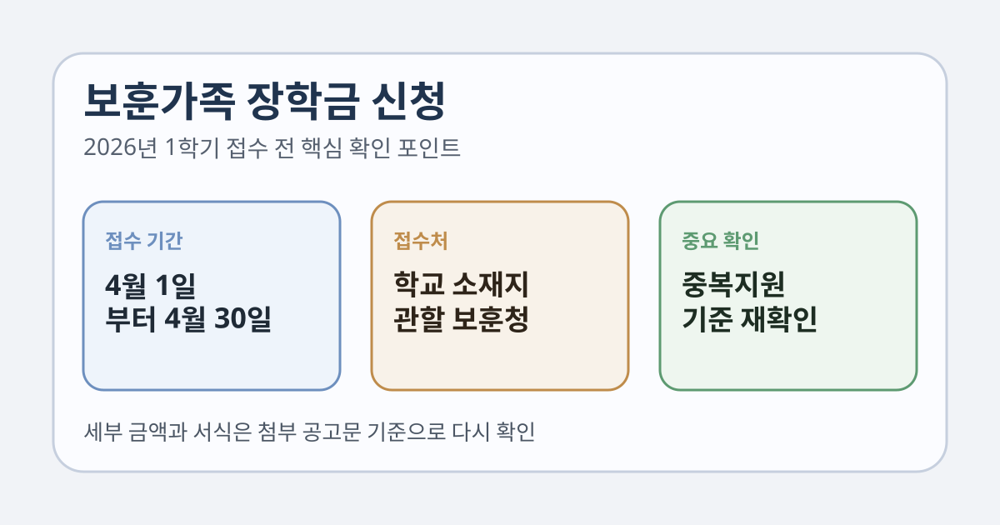

보훈가족 장학금 신청을 찾는 분들이 가장 먼저 확인해야 할 것은 언제 접수하는지, 어디에 서류를 내는지, 다른 장학금이나 학자금대출과 겹치는지입니다. 장학금 이름만 보고 학교 행정실에 먼저 제출하려다 접수처를 혼동하는 경우가 적지 않습니다.
이 글은 2026년 1월 27일 국가보훈부 공식 공고를 기준으로 정리했습니다. 장학금 세부 금액과 제출서식은 첨부 공고문 기준으로 달라질 수 있으니, 신청 직전에는 국가보훈부 공지와 관할 보훈(지)청 안내를 다시 확인하세요.

1. 2026년 1학기 신청 기간은 언제인가요?
국가보훈부가 2026년 1월 27일 올린 공식 공고에 따르면, 2026년 1학기 보훈(가족) 장학금 신청 기간은 2026년 4월 1일부터 4월 30일까지입니다.
온라인 상에서 날짜만 보고 미리 안심하기보다, 실제로는 재학증명서나 성적증명서 같은 기본 서류 준비 시간이 걸릴 수 있으므로 4월 초부터 준비하는 편이 좋습니다.
2. 어디에 접수하나요?
공고 본문에는 교육기관 소재지 관할 보훈(지)청 보훈과가 접수처라고 적혀 있습니다. 즉, 주민등록상 주소지 기준으로 단정하기보다 내가 다니는 학교가 어디에 있는지를 먼저 봐야 합니다.
- 접수처: 교육기관 소재지 관할 보훈(지)청 보훈과
- 문의: 국가보훈부 보훈상담센터 1577-0606 또는 관할 보훈지청
학교와 거주지가 다른 경우에는 특히 접수처를 착각하기 쉽기 때문에, 국가보훈부가 함께 올린 보훈(지)청 주소 및 연락처 파일을 먼저 확인하는 편이 안전합니다.
3. 접수 방법은 어떻게 되나요?
국가보훈부 공고 기준 접수 방법은 아래 두 가지입니다.
- 방문접수
- 등기우편 접수: 신청서 접수 마지막 날 우체국 소인분까지 유효
우편 접수를 고려한다면 마감일 당일 발송만 믿지 말고, 서류 누락 여부를 확인할 시간을 남겨두는 편이 좋습니다.
4. 신청 전에 특히 봐야 할 점은?
공식 공고에는 보훈가족장학금이 한국장학재단 학자금대출 및 장학 중복지원방지 제도의 적용을 받는다고 명시돼 있습니다. 즉, 이미 다른 장학금이나 학자금 지원을 받고 있다면 단순히 “추가로 더 받는다”로 생각하면 안 됩니다.
국가보훈부는 자세한 내용은 한국장학재단에 문의하라고 안내하고 있습니다. 따라서 국가장학금, 교내장학금, 학자금대출이 이미 있는 경우에는 등록금 범위를 초과하는지를 보수적으로 확인해야 합니다.
5. 금액과 서식은 어디서 확인하나요?
이번 국가보훈부 공고 본문에는 장학금 세부 금액표가 직접 적혀 있지 않고, 신청 서식 등 자세한 사항은 붙임 파일 참조라고 안내돼 있습니다. 그래서 글 하나만 보고 금액을 단정하기보다 본인 과정과 장학 유형에 해당하는 첨부 공고문을 꼭 확인해야 합니다.
특히 대학, 대학원, 특수학교 등 과정 구분이나 성적·학적 요건은 첨부 공고문에서 달라질 수 있으므로, 관할 보훈청 상담과 함께 확인하는 편이 가장 정확합니다.
6. 신청 전에 준비하면 좋은 체크리스트
- 내 학교 소재지 기준 관할 보훈(지)청 확인
- 접수 기간이 2026.04.01 ~ 2026.04.30인지 다시 확인
- 방문접수인지 등기우편 접수인지 결정
- 첨부 공고문에서 본인 장학 유형과 금액표 확인
- 다른 장학금 또는 학자금대출과 중복지원 여부 점검
- 문의가 필요하면 1577-0606 또는 관할 보훈청에 먼저 상담
한 번에 요약하면
- 2026년 1학기 보훈가족 장학금 신청 기간은 2026.04.01 ~ 2026.04.30입니다.
- 접수처는 교육기관 소재지 관할 보훈(지)청 보훈과입니다.
- 접수는 방문 또는 등기우편으로 가능하며, 우편은 마지막 날 소인분까지 유효합니다.
- 보훈가족장학금은 한국장학재단 중복지원방지 제도의 적용을 받습니다.
- 세부 금액과 서식은 첨부 공고문 기준이므로 신청 직전 다시 확인해야 합니다.
자주 묻는 질문
Q. 학교 장학팀에 내면 되나요?
국가보훈부 공고 기준 접수처는 학교가 아니라 교육기관 소재지 관할 보훈(지)청 보훈과입니다.
Q. 우편으로 보내도 되나요?
됩니다. 다만 공식 공고에는 마지막 날 우체국 소인분까지 유효하다고 적혀 있으므로, 누락 방지를 위해 여유 있게 보내는 편이 좋습니다.
Q. 국가장학금이 있으면 무조건 못 받나요?
그렇게 단정하기보다 중복지원방지 기준을 확인해야 합니다. 공식 공고는 한국장학재단 제도 적용을 받는다고 안내하고 있습니다.
공식 링크
보훈가족 장학금은 첨부 공고문, 장학 유형, 중복지원 여부에 따라 실제 판단이 달라질 수 있습니다. 서류 제출 직전에는 국가보훈부 공고와 관할 보훈청 안내를 다시 확인하세요.